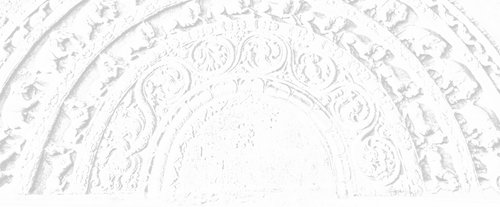

Sermon 24
Namo tassa bhagavato arahato sammāsambuddhassa
Namo tassa bhagavato arahato sammāsambuddhassa
Namo tassa bhagavato arahato sammāsambuddhassaEtaṁ santaṁ, etaṁ paṇītaṁ,
yadidaṁ sabbasaṅkhārasamatho sabbūpadhipaṭinissaggo
taṇhakkhayo virāgo nirodho nibbānaṁ.1“This is peaceful, this is excellent,
namely the stilling of all preparations, the relinquishment of all assets,
the destruction of craving, detachment, cessation, extinction.”
With the permission of the Most Venerable Great Preceptor and the assembly of the venerable meditative monks. This is the twentyfourth sermon in the series of sermons on Nibbāna.
In our last sermon, we brought up a quotation from the Rohitassasutta, which enshrines a momentous declaration by the Buddha to the effect that the world, the arising of the world, the cessation of the world, and the path leading to the cessation of the world, could be pointed out with reference to this same body with its perceptions and mind.2
The six sense-spheres, or the six bases of sense-contact, with which we acquaint ourselves with the world as it is conventionally understood and measured out, are themselves called ‘the world’ according to the Noble One’s terminology.3
Therefore, one can declare in accordance with the Dhamma, that the very cessation of those six sense-spheres is the cessation of the world. It is this state of the cessation of the world that is known as asaṅkhata dhātu, or the ‘unprepared element’. That unprepared state, described in discourses on Nibbāna in such terms as atthi, bhikkhave, ajātaṁ abhūtaṁ akataṁ asaṁkataṁ,4 “monks, there is an unborn, an unbecome, an unmade, an unprepared”, is this cessation of the six spheres of sense, which is the end of that prepared world.
So, then, this particular world’s end, the end of the world as defined here, is not a destination to be reached by travelling. The sage Rohitassa walked for hundred years in search of this world’s end at a speed of a flying arrow, but he failed to discover the world’s end. Why? It is because he took ‘the world’ along with him in his journey to see its end. Since this six-based body with its perceptions and mind is itself the world, he was taking the world with him in his exploration. That is why he had to die on the way without seeing the end of the world.
That end of the world, which one cannot see or reach by travelling, the Buddha pointed out in the very cessation of the six sense-spheres. This fact comes to light in the discourses dealing with Nibbāna in the Pāṭaligāmiyavagga of the Udāna, which we had already discussed.5 For instance, in the first discourse on Nibbāna, beginning with the words atthi, bhikkhave, tad āyatanaṁ, “there is, monks, that sphere”, we find towards the end the following statement:
Tatra p’ahaṁ, bhikkhave, n’eva āgatiṁ vadāmi na gatiṁ na ṭhitiṁ na cutiṁ na upapattiṁ, appatiṭṭhaṁ appavattaṁ anārammaṇaṁ eva taṁ, es’ ev’ anto dukkhassa.6
In that particular state, described as a ‘sphere’, in which there is neither earth, nor water, nor fire, nor air, etc.:
I say, there is neither a coming, nor a going, nor a standing, nor a passing away, nor a being reborn; that state which is unestablished, non continuing and objectless, is itself the end of suffering.
So, then, this journey’s end, the journey’s end that cannot be reached by journeying, the Buddha pointed out in the cessation of the six sense-spheres.
We come across the following passage in the fourth discourse on Nibbāna in the Pāṭaligāmiyavagga of the Udāna:
Nissitassa calitaṁ, anissitassa calitaṁ natthi, calite asati passaddhi, passaddhiyā sati nati no hoti, natiyā asati āgatigati na hoti, āgatigatiyā asati cutūpapāto na hoti, cutūpapāte asati n’ ev’ idha na huraṁ na ubhayamantare, es’ ev’ anto dukkhassa.7
To the attached there is wavering, to the unattached there is no wavering; wavering not being, there is calm; calm being, there is no inclination; inclination not being, there is no coming and going; coming and going not being, there is no passing away or reappearing; when there is no passing away or reappearing, there is neither a ‘here’, nor a ‘there’, nor anything between the two – this is the end of suffering.
It is in such profound terms, that the Buddha described the end of the world. One cannot see it by journeying. It can be seen only by wisdom. In fact, even the very concept of ‘going’ has to be transcended in order to see it.
So, it seems, Rohitassa carried the world with him in his journey to see the end of the world. He made another blunder. He was going in search of a place where there is no death, in order to escape death. Even that, the Buddha had declared, is not possible to see or reach by travelling.
Rohitassa took Māra along with him in his journey to find a place where there is no death. Why do we say so? In the Rādhasaṁyutta of the Saṁyutta Nikāya we find Venerable Rādha putting the following question to the Buddha:
’Māro, māro’ti, bhante, vuccati, kittāvatā nu kho, bhante, ’māro’ti vuccati?8
Māra, Māra, they say, venerable sir, to what extent is Māra called as such?
Now this is how the Buddha answers the question:
Rūpe kho, Rādha, sati Māro vā assa māretā vā yo vā pana mīyati. Tasmātiha tvaṁ, Rādha, rūpaṁ ’Māro’ti passa, ’māretā’ti passa, ’mīyatī’ti passa, ’rogo’ti passa, ’gaṇḍo’ti passa, ’sallan’ti passa, ’aghan’ti passa, ’aghabhūtan’ti passa. Ye nam evaṁ passanti te sammā passanti.
Where there is form, Rādha, there would be a Māra, or one who kills, or one who dies. Therefore, Rādha, in this context you look upon form as ‘Māra’, as ‘one who kills’, as ‘one who dies’, as a disease, as a boil, as a dart, as a misery, as a wretchedness. They that look upon thus are those that see rightly.
As in the case of form, so also in regard to feeling, perception, preparations and consciousness, the same mode of seeing rightly is recommended. So, in this context, each of the five aggregates is looked upon as a Māra, from the point of view of the Dhamma. That is why we say that Rohitassa went in search of a deathless place taking death along with him.
From this definition it is clear that so long as one grasps with craving the aggregates of form, feeling, perception, preparations and consciousness, there is a Māra, a killer, and one who dies. Therefore it is, that by giving up the five aggregates one is freed from Māra, is liberated from death and attains the deathless state. That is why we said that the arahant has attained the deathless state, here and now, in this world itself.9 The principle involved here we have already stated while discussing the law of dependent arising.10
Let us remind ourselves of the relevant section of a verse in the Bhadrāvudhamāṇavappucchā of the Pārāyanavagga of the Sutta Nipāta:
Yaṁ yaṁ hi lokasmiṁ upādiyanti,
ten’ eva Māro anveti jantuṁ.11Whatever thing they grasp in this world,
By that itself Māra pursues a man.
Because of grasping, there is becoming or existence and with it birth, decay and death, etc., follow suit, all due to craving. That is the deep idea behind the Buddha’s definition of the five grasping groups in terms of Māra.
In fact, these six sense-spheres, the six bases, are within the jurisdiction of Māra. This is evident from Māra’s own words in the Kassakasutta of the Sagāthakavagga of the Saṁyutta Nikāya.
Once, when the Buddha was admonishing the monks with a sermon on Nibbāna, it occurred to Māra, the Evil One:
“Now this recluse Gotama is admonishing the monks and the monks are listening attentively. I must go and blind their eye of wisdom.”
With this evil intention, he came there in the guise of a farmer, carrying a plough on his shoulder, a goad in his hand, with dishevelled hair and muddy feet, and asked the Buddha:
“Recluse, did you see my oxen?”
Then the Buddha retorted:
“What is the use of oxen for you, Evil One?”
Māra understood that the Buddha had recognized him and came out with the following boast of his superiority:
Mam eva, samaṇa, cakkhu, mama rūpā, mama cakkhusamphassaviññānāyatanaṁ, kuhiṁ me, samaṇa, gantvā mokkhasi?
Mam eva, samaṇa, sotaṁ … Mam eva, samaṇa, ghānaṁ …Mam eva, samaṇa, jivhā … Mam eva, samaṇa, kāyo …
Mam eva, samaṇa, mano, mama dhammā, mama manosamphassaviññānāyatanaṁ, kuhiṁ me, samaṇa, gantvā mokkhasi?12
“Mine, O recluse, is the eye, mine are the forms and mine the sphere of eye-contact, where will you, recluse, go to escape me?
Mine, O recluse, is the ear … Mine, O recluse is the nose … Mine, O recluse is the tongue … Mine, O recluse is the body …
Mine, O recluse is the mind, mine are the mind-objects and mine the sphere of mind-contact, where will you, recluse, go to escape me?“
Now this is how the Buddha responded to that challenge:
Taveva, pāpima, cakkhu, tava rūpā, tava cakkhusamphassaviññāṇāyatanaṁ, yattha ca kho, pāpima, natthi cakkhu, natthi rūpā, natthi cakkhusamphassaviññāṇāyatanaṁ, agati tava tattha pāpima.
Taveva, pāpima, sotaṁ … Taveva, pāpima, ghāṇaṁ … Taveva, pāpima, jivhaṁ … Taveva, pāpima, kāyaṁ …
Taveva, pāpima, mano, tava dhammā, tava manosamphassaviññāṇāyatanaṁ, yattha ca kho, pāpima, natthi mano, natthi dhammā, natthi manosamphassaviññāṇāyatanaṁ, agati tava tattha pāpima.
“Yours, O Evil One, is the eye, yours are the forms and yours the sphere of eye-contact, but where there is no eye, no forms and no sphere of eye-contact, there you cannot go, Evil One.
Yours, Evil One, is the ear … Yours, Evil One, is the nose … Yours, Evil One, is the tongue … Yours, Evil One, is the body …
Yours, Evil One, is the mind, yours are the mind-objects and yours the sphere of mind-contact, but where there is no mind, no mind-objects and no sphere of mind-contact, there you cannot go, Evil One.“
From the Buddha’s reprisal to Māra’s challenge, we can well infer that there indeed is a place to which Māra has no access. That is none other than the cessation of the six sense-spheres. Since it is something realizable, it is referred to as a ‘sphere’ in such contexts as, for instance, in the discourse on Nibbāna beginning with the words atthi, bhikkhave, tad āyatanaṁ,13 “there is, monks, that sphere”, etc.
It is this same cessation of the six sense-spheres that is referred to as papañcanirodha and papañcavūpasama, cessation or appeasement of conceptual proliferation. In the Mahākoṭṭhitasutta we discussed in our previous sermon, we found Venerable Sāriputta making the following conclusive statement to the same effect:
Channaṁ, āvuso, phassāyatanānaṁ asesavirāganirodhā papañcanirodho papañcavūpasamo,14
Friend, by the remainderless fading away and cessation of the six spheres of sense-contact, there comes to be the cessation and appeasement of conceptual proliferation.
That itself is the non-prolific state. All concepts of ‘going’, ‘coming’, ‘being born’, ‘growing old’ and ‘dying’, are to be found in the prolific. They simply do not exist in the non-prolific. That is why it is inaccessible to Māra. In it, neither the sense-bases, such as the eye, ear and nose, nor their respective objects are to be found. So it is clear that the cessation of the six sense-spheres is that state of release from Māra, attainable here and now.
All the six sense-spheres are built up on the perception of permanence. Therefore, the realization of their cessation is possible only through the perception of impermanence. The contemplation of impermanence is the path to its realization.
An extremely subtle contemplation on impermanence, that can bring about the cessation of the six sense-spheres, is to be found in the Dvayamsutta (No. 2) of the Saḷāyatanavagga of the Saṁyutta Nikāya. Dvayaṁ means a dyad. There are two discourses by that name, and this is the second. A strikingly deep vision of consciousness unfolds itself in this discourse as follows:
Dvayaṁ, bhikkhave, paṭicca viññāṇaṁ sambhoti. Kathañca, bhikkhave, dvayaṁ paṭicca viññāṇaṁ sambhoti? Cakkhuñca paṭicca rūpe ca uppajjati cakkhuviññāṇaṁ. Cakkhu aniccaṁ vipariṇāmi aññathābhāvi. Rūpā aniccā vipariṇāmino aññathābhāvino. Itthetaṁ dvayaṁ calañceva vyayañca aniccaṁ vipariṇāmi aññathābhāvi.
Cakkhuviññāṇaṁ aniccaṁ vipariṇāmi aññathābhāvi. Yo pi hetu yo pi paccayo cakkhuviññāṇassa uppādāya, so pi hetu so pi paccayo anicco vipariṇāmī aññathābhāvī. Aniccaṁ kho pana, bhikkhave, paccayaṁ paṭicca uppannaṁ cakkhuviññāṇaṁ, kuto niccaṁ bhavissati?
Yā kho, bhikkhave, imesaṁ tiṇṇaṁ dhammānaṁ saṅgati sannipāto samavāyo, ayaṁ vuccati, bhikkhave, cakkhusamphasso. Cakkhusamphasso pi anicco vipariṇāmī aññathābhāvī. Yo pi hetu yo pi paccayo cakkhusamphassassa uppādāya, so pi hetu so pi paccayo anicco vipariṇāmī aññathābhāvī. Aniccaṁ kho pana, bhikkhave, paccayaṁ paṭicca uppanno cakkhusamphasso, kuto nicco bhavissati?
Phuṭṭho, bhikkhave, vedeti, phuṭṭho ceteti, phuṭṭho sañjānāti. Itthete pi dhammā calā ceva vayā ca aniccā vipariṇāmino aññathābhāvino.15
Even by listening to it, one can easily guess that there is a string of terms giving the idea of impermanence. Let us now try to translate it.
Dependent on a dyad, monks, consciousness comes to be. How is it, monks, that consciousness comes to be dependent on a dyad? Depending on eye and forms arises eye-consciousness. Eye is impermanent, changing, becoming otherwise. Forms are impermanent, changing, becoming otherwise. Thus this dyad is unstable, evanescent, impermanent, changing, becoming otherwise.
Eye-consciousness is impermanent, changing, becoming otherwise. Whatever cause and condition there is for the arising of eye-consciousness, that cause, that condition, too, is impermanent, changing and becoming otherwise. How can eye-consciousness, arisen in dependence on an impermanent condition, be permanent, monks?
That concurrence, that meeting, that togetherness of these three things, monks, is called eye-contact. Even the eye-contact, monks is impermanent, changing, becoming otherwise. Whatever cause and condition there is for the arising of eye-contact, that cause and condition, too, is impermanent, changing and becoming otherwise. How can eye-contact, arisen in dependence on an impermanent condition, be permanent, monks?
Contacted, monks, one feels, contacted one intends, contacted one perceives. Thus these things, too, are unstable, evanescent, impermanent, changing and becoming otherwise.
The sutta proceeds in this way, stressing the impermanence of the other sense-spheres as well, the ear, the nose, the tongue, the body and the mind. The entire discourse vibrates with the tone of impermanence.
It is the law of dependent arising that the Buddha presents here with reference to the six sense-spheres. In other words, how the world gets built up. It is not founded on stable existing things, but on what is impermanent, unstable and changing, whose nature is to become otherwise. This is how the entire perception of the world is built up. Its foundation is always crumbling, changing and transforming.
Generally, in the discourse dealing with the question of sense-restraint, one comes across the phrase
na nimittaggāhi nānuvyañjanaggāhī,16
he doesn’t grasp a sign nor does he dwell on its details.
The tendency to grasp a sign in regard to the objects of the six senses is the result of the perception of permanence. Due to the perception of permanence, there is a grasping of signs, and due to that grasping of signs, influxes flow in. Proliferations through craving, conceits and views get heaped up. This is how our world is constructed. This is the way the aggregates of attachment get accumulated. On the other hand, the contemplation of impermanence that leads to the signless concentration is helpful in freeing the mind from these signs.
The reflection on an object can be of two types. Where there is a perception of permanence, the tendency is to grasp the object tenaciously and hang on to it. This pervert tendency is known as parāmasana. It is impelled by the triple proliferations of craving, conceits and views. Under its influence one is carried away by prolific perceptions, papañcasaññā, and is kept under the sway of worldly concepts and designations born of prolific perceptions, papañcasaññāsaṅkhā.
On the contrary, the perception of impermanence fosters a detached and observant attitude in reflection, which is known as sammasana. It is that healthy attitude which progressively leads to the liberation of the mind from the influence of signs, and attenuates the prolific tendencies to craving, conceits and views.
This kind of reflection is the harbinger of insight. Contemplation of impermanence on these lines effectively puts an end to this entire mass of saṁsāric suffering, as is evident from the following powerful declaration by the Buddha in the Khandhasaṁyutta.
Aniccasañña, bhikkhave, bhāvitā bahulīkatā sabbaṁ kāmarāgaṁ pariyādiyati, sabbaṁ rūparāgaṁ pariyādiyati, sabbaṁ bhavarāgaṁ pariyādiyati, sabbaṁ avijjaṁ pariyādiyati, sabbaṁ asmimānaṁ pariyādiyati samūhanati.17
The perception of impermanence, monks, when developed and intensively practised, extirpates all sensual lust, extirpates all lust for forms, extirpates all lust for existence, extirpates all ignorance and extirpates and eradicates the conceit ‘am’.
The contemplation of impermanence, therefore, strikes at the very root of this entire mass of saṁsāric suffering. The discourse on the dyad, quoted above, amply illustrates this fact. The recurrent terms like cala, ‘unstable’, and vaya, ‘evanescent’, in the passage, indicate that the entire superstructure of sensory knowledge is founded on certain pervert attitudes. An imperceptible impermanence underlies it.
In a number of sermons we had to bring up the simile of the motion picture. The simile is not our own, but only a modernization of a canonical simile used by the Buddha himself. The point of divergence was the question the Buddha had addressed to the monks in the Gaddulasutta.
Diṭṭhaṁ vo, bhikkhave, caraṇaṁ nāma cittaṁ?18
Monks, have you seen a picture called a movie?
The monks answer in the affirmative, and so the Buddha proceeds:
Tampi kho, bhikkhave, caraṇaṁ nāma cittaṁ citteneva cintitaṁ. Tena pi kho, bhikkhave, caraṇena cittena cittaññeva cittataraṁ.
Monks, that picture called a movie is something thought out by the mind. But the thought itself, monks, is even more picturesque than that picture.
To say that it is more picturesque is to suggest its variegated character. Thought is intrinsically variegated. We have no idea what sort of a motion picture was there at that time, but the modern day movie has a way of concealing impermanence by the rapidity of projections of the series of pictures on the screen. The rapidity itself gives an impression of permanence, which is a perversion, vipallāsa.
The movie is enjoyable because of this perversion. Due to the perception of permanence, there is a grasping of signs, and in the wake of it influxes flow in, giving rise to proliferation, due to which one is overwhelmed by reckonings born of prolific conceptualization, papañcasaññāsaṅkhā. That is how one enjoys a film show. All this comes about as a result of ignorance, or lack of awareness of the cinematographic tricks concealing the fleeting, vibrating and evanescent nature of the scenes on the screen.
Though we resort to such artificial illustrations, by way of a simile, the Buddha declares that actually it is impossible to give a fitting simile to illustrate the rapidity of a thought process. Once he proclaimed:
Upamā pi na sukarā yāva lahuparivattaṁ cittaṁ,19
it is not easy even to give a simile to show how rapidly thought changes.
Sometimes the Buddha resorts to double entendre to bring out piquantly some deep idea. He puns on the word citta, ‘thought’ or ‘picture’, in order to suggest the ‘picturesque’ or variegated nature of thought, when he asserts that thought is more picturesque, cittatara, than the picture. We can see that it is quite reasonable in the light of the Dvayamsutta. It is this series of picturesque formations that gives us a perception of permanence, which in turn is instrumental in creating a world before our eyes.
Our eye changes every split second. It is quivering, vibrating and transient. So also are the forms. But there is a malignantly pervert idea, ingrained in saṁsāric beings, known as the perception of permanence in the impermanent, anicce niccasaññā, which prevents them from seeing the inherent transience of eye and forms. That is how the six spheres of sense create a world before us.
It is the substructure of this sense created world that the Buddha has revealed to us in this particular discourse on impermanence. The substructure, on analysis, reveals a duality, dvayaṁ, bhikkhave, paṭicca viññāṇaṁ sambhoti, “dependent on a dyad, monks, arises consciousness”.
Consciousness is not something substantial and absolute, like the so-called soul. That is precisely the point of divergence for Buddhism, when compared with those religious systems which rely on soul theories.
In the Dhamma there is mention of six consciousnesses, as cakkhuviññāṇa, sotaviññāṇa, ghānaviññāṇa, jivhāviññāṇa, kāyaviññāṇa and manoviññāṇa, eye-, ear-, nose-, tongue-, body- and mind-consciousness. Everyone of these consciousnesses is based on a dyad.
Just as in the case of eye-consciousness we are given the formula beginning with cakkhuñca paṭicca rūpe ca, “dependent on eye and forms”, so with regard to ear-consciousness we get sotañca paṭicca sadde ca, “dependent on ear and sounds”, and so on. Even when we come to mind-consciousness, the theme is the same, manañca paṭicca dhamme ca, “dependent on mind and mind-objects”. Mind also is vibrating, changing and transforming with extreme rapidity every moment. So are the objects of the mind.
The entire world is structured on these vibrant, transient and evanescent basic elements. That is the burden of this powerful discourse of the Buddha. Therefore, if someone developed the contemplation of impermanence to the highest degree and brought his mind to the signless state, having started from the sign itself, it goes without saying that he has realized the cessation of the world. That is, the experience of Nibbāna.
It is, at the same time, the cessation of proliferation, papañcanirodha. Prolific conceptualization is founded on the perception of permanence, whereby one comes under the sway of reckonings born of prolific perceptions, papañcasaññāsaṅkhā. Proliferation creates things, giving rise to the antinomian conflict. Duality masquerades behind it.
It is by mistaking the impermanent eye and the impermanent forms as permanent that the whole confusion has come about. One imagines the eye and forms as permanent and thereby becomes blind to their momentary change and transience. The glue of craving and intoxicating influxes create a facade of a real world before him. That is the world we touch with our hands and see with our eyes. All this exposes the insubstantial nature of this world.
The products of the six sense-bases can be summed up by the four terms diṭṭha, suta, muta and viññāta, things seen, heard, sensed and cognized. The Dvayamsutta brings to light the fact that all these four are insubstantial and coreless.
Due to this very fact, the Tathāgata who realized the cessation of the six sense-bases, was confronted with the stupendous problem of mediating with the world that could not even imagine the frightful prospect of a cessation of the six sense-bases. That is to say, when he reached the state of non-proliferation, nippapañca, by experiencing the cessation of the world through the cessation of the six sense-bases, the Tathāgata had to grapple with the serious problem of truth and falsehood in mediating with the world.
There is an extremely important discourse connected with the idea of the void, suññatāpaṭisaṁyutta, which echoes this epistemological crisis, in the section of the Fours in the Aṅguttara Nikāya, entitled Kāḷakārāmasutta. This Kāḷakārāmasutta was preached by the Buddha to the congregation of monks at the Kāḷaka monastery in the city of Sāketa. The discourse, though brief, is one that is extremely deep in its presentation of the idea of the void.
Before getting down to an exposition of this discourse, by way of sketching its historical background, we may mention a few things. Apart from the mention of the venue, nothing much could be gleaned from the discourse itself as to how it was inspired. The commentaries, however, relate the episode of Cūḷasubhaddhā, daughter of Anāthapiṇḍika, to explain the context in which the discourse was preached.
Cūḷasubhaddhā, who was a stream-winner, sotāpanna, was given in marriage to the son of the millionaire Kāḷaka of Sāketa, a devout follower of Nigaṇṭha Nātaputta. Cūḷasubhaddhā managed to convert him by inviting the Buddha to Sāketa and getting Kāḷaka to listen to the Dhamma. After his conversion, he built a monastery in his park and offered it to the Buddha.
The commentary says that a group of five-hundred newly ordained monks of Sāketa gathered in this Kāḷaka monastery and were speaking in praise of the Buddha, marvelling at his extraordinary feat of converting the millionaire and the inhabitants of Sāketa.
It was at this juncture that the Buddha came and addressed this deep discourse to those monks. According to the commentary, the discourse was so profound that at five points of the sermon the earth shook miraculously and at the end of the sermon all the five-hundred monks who listened to it attained arahanthood.
It is chronicled in the history of Buddhism that, during the great missionary movement initiated by the emperor Asoka, Venerable Mahā Rakkhita was sent to convert the country of the Yonakas. The very first sermon he preached there was based on this Kāḷakārāmasutta, on hearing which thirty-seven-thousand attained fruits of the noble path. If the identification of the Yonakas with the Greeks is correct, the choice of this deeply philosophical discourse is understandable.
According to the chronicles and the commentaries, another significant occasion in which the Kāḷakārāmasutta served as a theme was when Kālabuddharakkhita Thera gave an all-night sermon on the dark night of the new-moon Poya day, seated under the black Timbaru tree at Cetiya Pabbata in Sri Lanka. King Saddhātissa was also present in the audience.
The fact that this discourse was held in high esteem is evident from its historical background. As in the case of many other deep discourses, here too we are faced with the problem of variant readings. Even the commentator is at a loss to conclude and editors go their own way. We have to wade through the variant readings to make some sense out of the discourse as it is handed down. Let us now take up the relevant portions of this abstruse discourse.
Yaṁ, bhikkhave, sadevakassa lokassa samārakassa sabrahmakassa sassamaṇabrāhmaṇiyā pajāya sadevamanussāya diṭṭhaṁ sutaṁ mutaṁ viññātaṁ pattaṁ pariyesitaṁ anuvicaritaṁ manasā, tam ahaṁ jānāmi.
Yaṁ, bhikkhave, sadevakassa lokassa samārakassa sabrahmakassa sassamaṇabrāhmaṇiyā pajāya sadevamanussāya diṭṭhaṁ sutaṁ mutaṁ viññātaṁ pattaṁ pariyesitaṁ anuvicaritaṁ manasā, tam ahaṁ abhaññāsiṁ. Taṁ tathāgatasssa viditaṁ, taṁ tathāgato na upaṭṭhāsi.
Yaṁ, bhikkhave, sadevakassa lokassa samārakassa sabrahmakassa sassamaṇabrāhmaṇiyā pajāya sadevamanussāya diṭṭhaṁ sutaṁ mutaṁ viññātaṁ pattaṁ pariyesitaṁ anuvicaritaṁ manasā, tam ahaṁ ’na jānāmī’ti vadeyyaṁ, taṁ mama assa musā, tam ahaṁ ’jānāmi ca na ca jānāmī’ti vadeyyaṁ, taṁ p’assa tādisam eva, tam ahaṁ ’neva jānāmi na na jānāmī’ti vadeyyaṁ, taṁ mama assa kali.
Iti kho, bhikkhave, tathāgato diṭṭhā daṭṭhabbaṁ diṭṭhaṁ na maññati, adiṭṭhaṁ na maññati, daṭṭhabbaṁ na maññati, daṭṭhāraṁ na maññati. Sutā sotabbaṁ sutaṁ na maññati, asutaṁ na maññati, sotabbaṁ na maññati, sotāraṁ na maññati. Mutā motabbaṁ mutaṁ na maññati, amutaṁ na maññati, motabbaṁ na maññati, motāraṁ na maññati. Viññātā viññātabbaṁ viññātaṁ na maññati, aviññātaṁ na maññati, viññātabbaṁ na maññati, viññātāraṁ na maññati.
Iti kho, bhikkhave, tathāgato diṭṭha-suta-muta-viññātabbesu dhammesu tādī, yeva tādī tamhā ca pana tādimhā añño tādī uttaritaro vā paṇītataro vā natthī’ti vadāmi.
Yaṁ kiñci diṭṭhaṁ va sutaṁ mutaṁ vā,
ajjhositaṁ saccamutaṁ paresaṁ,
na tesu tādī saya saṁvutesu,
saccaṁ musā vā pi paraṁ daheyyaṁ.Etañca sallaṁ paṭigacca disvā,
ajjhositā yattha pajā visattā,
jānāmi passāmi tath’ eva etaṁ,
ajjhositaṁ natthi tathāgatānaṁ.20Monks, whatsoever in the world, with its gods, Māras and Brahmas, among the progeny consisting of recluses and Brahmins, gods and men, whatsoever is seen, heard, sensed, cognized, thought after and pondered over by the mind, all that do I know.
Monks, whatsoever in the world, with its gods, Māras and Brahmas, among the progeny consisting of recluses and Brahmins, gods and men, whatsoever is seen, heard, sensed, cognized, thought after and pondered over by the mind, that have I fully understood. All that is known to the Tathāgata, but the Tathāgata has not taken his stand upon it.
If I were to say, monks, whatsoever in the world, with its gods, Māras and Brahmas, among the progeny consisting of recluses and Brahmins, gods and men, whatsoever is seen, heard, sensed, cognized, thought after and pondered over by the mind, all that I do not know, it would be a falsehood in me. If I were to say I both know it and know it not, that too would be a falsehood in me. If I were to say I neither know it nor am ignorant of it, it would be a fault in me.
Thus, monks, a Tathāgata does not imagine a visible thing as apart from seeing, he does not imagine an unseen, he does not imagine a thing worth seeing, he does not imagine a seer. He does not imagine an audible thing as apart from hearing, he does not imagine an unheard, he does not imagine a thing worth hearing, he does not imagine a hearer. He does not imagine a thing to be sensed as apart from sensation, he does not imagine an unsensed, he does not imagine a thing worth sensing, he does not imagine one who senses. He does not imagine a cognizable thing as apart from cognition, he does not imagine an uncognized, he does not imagine a thing worth cognizing, he does not imagine one who cognizes.
Thus, monks, the Tathāgata, being such in regard to all phenomena, seen, heard, sensed and cognized, is such. Moreover than he who is such there is none other higher or more excellent, I declare.
Whatever is seen, heard, sensed,
Or clung to and esteemed as truth by other folk,
Midst those who are entrenched in their own views,
Being such, I hold none as true or false.This barb I beheld well in advance,
Whereon mankind is hooked impaled,
I know, I see, ’tis verily so,
No such clinging for the tathāgatas.
In the first statement the Buddha declares that he knows, tam ahaṁ jānāmi, whatever is seen, heard, sensed, cognized, thought after and pondered over by all beings in the world, and that is the sum total of the knowledge acquired through the six sense-bases.
In the second statement he affirms that the knowledge he has is of a higher order, tam ahaṁ abhaññāsiṁ, that amounts to an understanding, taṁ tathāgatasssa viditaṁ, by virtue of which he does not take his stand upon it, he has no stance, taṁ tathāgato na upaṭṭhāsi.
The third statement flows from this detached perspective. It is to the effect that the Tathāgata cannot disclaim knowledge, despite his detached attitude, as it would be tantamount to prevarication in the eyes of the world, taṁ mama assa musā.
The fourth statement highlights the same incongruity, because the Tathāgata placed in this awkward situation cannot compromise by both claiming and disclaiming knowledge at the same time, tam ahaṁ ’jānāmi ca na ca jānāmī’ti vadeyyaṁ, taṁ p’assa tādisam eva.
As the fifth statement makes it clear, the Tathāgata does not deem it fit to wriggle out by neither claiming nor disclaiming knowledge of sense-data.
Then comes the declaration as to how the Tathāgata treats this body of sensory knowledge of the worldling.
Thus, monks, a Tathāgata does not imagine a visible thing as apart from the seen,
iti kho, bhikkhave, tathāgato diṭṭhā daṭṭhabbaṁ diṭṭhaṁ na maññati.
We have come across the terms diṭṭha, suta, muta, viññāta quite often, for instance in our discussion of the Bāhiyasutta in the context:
diṭṭhe diṭṭhamattaṁ bhavissati, sute sutamattaṁ bhavissati, mute mutamattaṁ bhavissati, viññāte viññātamattaṁ bhavissati,21
in the seen there will be just the seen, in the heard there will be just the heard, in the sensed there will be just the sensed, in the cognized there will be just the cognized.
In common parlance, the word ‘seen’ connotes something seen. But here we have something more radical, avoiding substantialist insinuations. It is just the seen in the seen, implied by diṭṭha, in this context too. The Tathāgata takes it just as a seen, without imagining that there is something substantial worthwhile seeing, as apart from it, diṭṭhā daṭṭhabbaṁ diṭṭhaṁ na maññati.
We are already familiar with the term maññanā, having discussed it in such discourses as the Mūlapariyāyasutta and the Bāhiyasutta.22 It stands for imaginings, prompted by cravings, conceits and views. The Tathāgata is free from such imaginings. He does not imagine a thing worthwhile seeing apart from the seen, nor does he imagine an unseen, adiṭṭhaṁ na maññati. The phenomenon of seeing is not denied.
The phrase daṭṭhabbaṁ na maññati conveys the idea that the Tathāgata does not imagine that there is something worth seeing, that there is something essential in it. Daṭṭhāraṁ na maññati, he does not imagine a seer or one who sees. He does not project an agent into the phenomenon by taking seriously the subject-object relationship.
With regard to the heard, suta, the sensed, muta, and the cognized, viññāta, too, the Tathāgata has no such imaginings. Then, in summing up it is said:
Iti kho, bhikkhave, tathāgato diṭṭha-suta-muta-viññātabbesu dhammesu tādi, yeva tādi,
thus, monks, the Tathāgata, being such in regard to all phenomena, seen, heard, sensed and cognized, is ‘such’.
The term tādī, too, came up in a number of our earlier sermons.23 We rendered it by ‘such’. It stands for the quality of steadfastness of the arahant in remaining unshaken by the eight worldly vicissitudes.
His mainstay, in this respect, is atammayatā, or non-identification. He is such because he does not grasp any of those things as ‘mine’. So he is ‘such’ in regard to whatever is seen, heard, sensed and cognized. There is no one who is higher or more excellent than this such-like-one in point of suchness. Then comes a couplet of verses, presenting the gist of the sermon.
Our rendering of the sermon is in need of further explication. Though it gives a general idea, some words and phrases in the original have far reaching implications. The basic idea behind the series of declarations made is the extraordinary change of attitude towards the question of speculative views, which marks off the Tathāgata from all his contemporaries.
He took a completely different turn, transcending the extremes of eternalism and annihilationism. This difference of attitude is revealed by the riddle like statements in the first part of the discourse. One gets the impression that the Tathāgata was confronted with a problematic situation of the highest order.
The first statement is to the effect that the Tathāgata knows whatever in the world with its gods, Māras and Brahmas, among the progeny consisting of recluses and Brahmins, gods and men, is seen, heard, sensed, cognized, thought after and pondered over by the mind.
The second statement asserts that the Tathāgata has a higher understanding of all that. All the same, he takes no stance in regard to whatever is seen, heard, sensed and cognized.
This might appear as a riddle. Usually when one has a higher understanding of something, one is inclined to take one’s stand upon it. But here we have a denial. The discourse bears some resemblance to the tetralemma we had discussed earlier.24 But there seems to be a difference here, in the formulation of the first proposition of the tetralemma.
Normally the first proposition amounts to an unqualified assertion of the affirmative standpoint. In this case, however, we find the statement that the Tathāgata not only knows all what the world knows, but that he has a higher understanding of it, abhaññāsiṁ. It is precisely because he has a higher understanding that he takes no stance in regard to it.
This might appear problematic, but let us remind ourselves of the two levels of understanding mentioned in the Mūlapariyāyasutta, discussed earlier, namely sañjānāti and abhijānāti. As an instance of the first level of understanding, we get the following passage in that discourse in regard to the untaught ordinary person, assutavā puthujjano:
Paṭhaviṁ paṭhavito sañjānāti. Paṭhaviṁ paṭhavito saññatvā paṭhaviṁ maññati, paṭhaviyā maññati, paṭhavito maññati, ’paṭhaviṁ me’ti maññati, paṭhaviṁ abhinandati.25
He perceives earth as ‘earth’. Having perceived earth as ‘earth’, he imagines ‘earth’ as such, he imagines ‘on the earth’, he imagines ‘from the earth’, he imagines ‘earth is mine’, he delights in earth.
The untaught ordinary person has a perceptual knowledge of earth, sañjānāti. That, too, is a level of knowledge. It is in fact the lowest grade of knowing. The untaught ordinary person can do no better than perceive earth as earth.
Having perceived earth as earth, he takes it seriously by its face value and goes on imagining by way of craving, conceit and views, granting it object-status. He imposes the grammatical superstructure on it. He imagines ‘on the earth’, he imagines ‘from the earth’, he imagines ‘earth is mine’, he delights in earth. This, then, is the lowest grade of knowledge.
On the other hand, about the Tathāgata’s level of understanding, the Mūlapariyāyasutta has the following description:
Paṭhaviṁ paṭhavito abhijānāti, paṭhaviṁ paṭhavito abhiññāya paṭhaviṁ na maññati, paṭhaviyā na maññati, paṭhavito na maññati, ’paṭhaviṁ me’ti na maññati, paṭhaviṁ nābhinandati.
He understands through higher knowledge earth as ‘earth’, having understood through higher knowledge earth as ‘earth’, he does not imagine earth to be ‘earth’, he does not imagine ‘on the earth’, he does not imagine ‘from the earth’, he does not imagine ‘earth is mine’, he does not delight in earth.
The Tathāgata, who has a higher knowledge of earth, as suggested by the word abhijānāti, does not entertain imaginings by taking earth at its face value. He is not carried away by the grammatical structure to imagine in such terms as ‘on the earth’ and ‘from the earth’.
In the present context, too, the same distinction in grades of knowledge is evident. Firstly, the Tathāgata says:
All that do I know, that have I fully understood. All that is known to the Tathāgata.
It is precisely because of this full understanding that he has not taken his stand upon it. He has no stance in regard to all that. This is the gist of the first paragraph of the discourse, which sounds more or less a paradox. It is because of this apparently queer state of affairs that the Tathāgata had to confess that it would be a falsehood on his part to say: “All that I do not know”.
If someone asks whether it is because he does not know that he takes no stance, he cannot say: “Yes”. As a matter of fact, it is precisely because he has understood that he takes no stance. But the worldlings are of the opinion that knowledge of a thing entitles one to assert it dogmatically.
To say “I both know it and know it not” or “I neither know it nor am ignorant of it” would also be mistaken by the world as a prevarication or equivocation. The first paragraph of the discourse has to be understood in this light.
The commentary has it that the earth shook at five points in the discourse. According to it the three significant terms jānāmi, abbhaññāsiṁ and viditaṁ, ‘I know’, ‘I have fully understood’, all that is ‘known’ to the Tathāgata represent a plane of omniscience, sabbaññutabhūmi, peculiar to a Buddha.26 Even at the end of this proclamation of omniscience, it is said the earth shook as a mark of approbation.
Then the phrase na upaṭṭhāsi, “does not take his stand upon it”, is interpreted by the commentary as indicating the plane of the influx-free one, khīṇāsavabhūmi. Why the Tathāgata has no stance in regard to sensory data is said to be due to his freedom from influxes. He does not grasp them by way of craving, conceit and views. He does not take his stand upon things seen, heard, sensed and cognized. He has no inclination or clinging towards them.